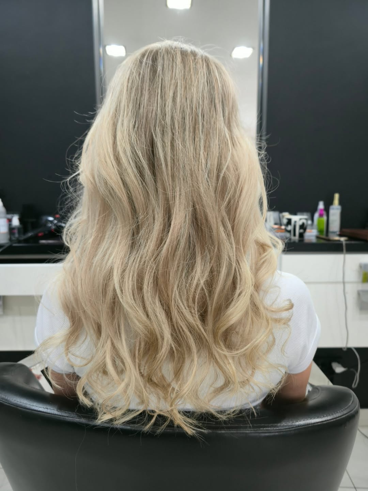

Kameralne studio Katarzyny Winer w Radomsku. Strzyżenie i koloryzacja w rytmie, który szanuje włosy i Twój czas.

„Pani Kasia słucha uważniej niż niejeden lekarz. Fryzura zawsze dokładnie taka, jaką noszę w głowie."
Opinia z Google · pełna ocena 5.0 przy 21 opiniach
★ ★ ★ ★ ★